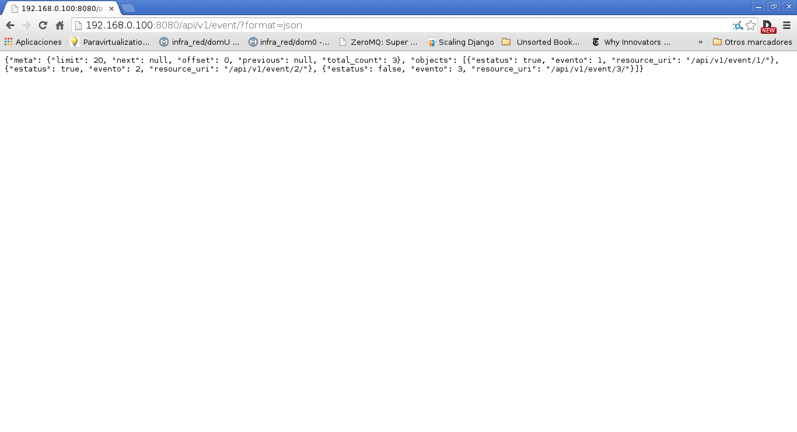

Siguiendo con la serie de artículos sobre django, ahora se mostrará como crear un API restful con django tastypie, su documentación la pueden encontrar acá.
En el caso de Debian/Ubuntu y otras distribuciones basadas se instalarán los siguientes programas:
Django south.lxml.mimeparse.tastypie.
Este artículo se basa en el siguiente artículo en inglés. Para instalar los programas se ejecuta apt-get:
#apt-get install python-django-south python-tastypie python-mimeparse python-lxml python3-lxml
La instalación por medio de pip es la siguiente:
#pip install Django South python-mimeparse dateutil django-tastypie lxml
Ahora a crear el proyecto pasarela con django-admin:
mkdir -p pruebas
cd pruebas
ernesto@pruebas:~/pruebas$ django-admin startproject pasarela
Se lista el contenido del directorio pasarela:
ernesto@pruebas:~/pruebas$ ls -l pasarela/
total 8
-rwxr-xr-x 1 ernesto ernesto 251 may 3 18:17 manage.py
drwxr-xr-x 2 ernesto ernesto 4096 may 3 18:17 pasarela
Se edita el settings.py dentro de pasarela:
ernesto@pruebas:~/pruebas$ vim pasarela/pasarela/settings.py
A continuación se muestra la parte que se modificó del archivo settings.py:
El admin del proyecto:
ADMINS = (
('Ernesto Crespo', 'ecrespo@xxxx'),
)
La base de datos que se usará por pruebas será sqlite3 y el nombre de la base de datos será pasarela.db:
DATABASES = {
'default': {
'ENGINE': 'django.db.backends.sqlite3', # Add 'postgresql_psycopg2', 'mysql', 'sqlite3' or 'oracle'.
'NAME': 'pasarela.db', # Or path to database file if using sqlite3.
'USER': '', # Not used with sqlite3.
'PASSWORD': '', # Not used with sqlite3.
'HOST': '', # Set to empty string for localhost. Not used with sqlite3.
'PORT': '', # Set to empty string for default. Not used with sqlite3.
}
}
Hosts permitidos son el servidor donde se encuentra django y el equipo donde se hará las pruebas:
ALLOWED_HOSTS = ["127.0.0.1","192.168.0.106"]
El huso horario será el de Caracas Venezuela:
TIME_ZONE = 'America/Caracas'
El idioma de la aplicación será Español Venezuela:
LANGUAGE_CODE = 'es-ve
Las aplicaciones a instalar son: django.contribution.admin, south, tastypie, pasarela.apps.sms:
INSTALLED_APPS = (
'django.contrib.auth',
'django.contrib.contenttypes',
'django.contrib.sessions',
'django.contrib.sites',
'django.contrib.messages',
'django.contrib.staticfiles',
# Uncomment the next line to enable the admin:
'django.contrib.admin',
'south',
'tastypie',
'pasarela.apps.sms',
# Uncomment the next line to enable admin documentation:
# 'django.contrib.admindocs',
)
Se crea el directorio apps y dentro de el se crea el archivo __init__.py:
ernesto@pruebas:~/pruebas/pasarela/pasarela$ mkdir -p apps
ernesto@pruebas:~/pruebas/pasarela/pasarela$ touch apps/__init__.py
Se listan los archivos dentro de apps:
ernesto@pruebas:~/pruebas/pasarela/pasarela$ ls -l apps
total 0
-rw-r--r-- 1 ernesto ernesto 0 may 3 18:41 __init__.py
Ahora se crea la aplicación django sms dentro de apps:
ernesto@pruebas:~/pruebas/pasarela/pasarela/apps$ django-admin startapp sms
Se lista el contenido de sms:
ernesto@pruebas:~/pruebas/pasarela/pasarela/apps$ ls -l sms/
total 12
-rw-r--r-- 1 ernesto ernesto 0 may 3 18:42 __init__.py
-rw-r--r-- 1 ernesto ernesto 57 may 3 18:42 models.py
-rw-r--r-- 1 ernesto ernesto 383 may 3 18:42 tests.py
-rw-r--r-- 1 ernesto ernesto 26 may 3 18:42 views.py
Ahora se creará el modelo de datos que se usará, se edita el archivo models.py de sms:
Se manejarán dos tablas, en una se maneja el historico de mensajes enviados y en la segunda tabla la culminación del envío de todos los mensajes.
#se importa models de django.db
from django.db import models
# Create your models here.
#Se crea la clase Evento que hereda de model.Model
class Evento(model.Model):
#Se crea la columna evento que será entero y clave primaria de la base de datos
evento = models.IntegerField(primary_key=True)
#Se crea el campo estatus que será booleano y por defecto será falso.
estatus = models.CharField(default=False)
#Se define la información que se requiere en el panel de administración web de django.
def __unicode__(self):
evento = "%Evento: %s, Estatus: %s " %(self.evento,self.estatus)
return evento
#Se crea la clase historicoSMS que hereda de models.Model
class HistoricoSMS(models.Model):
#Se crea la columna evento que es clave foranea de la tabla evento.
evento = models.ForeignKey(Evento)
#se crea mensaje con un tamaño de 150 caracteres
mensaje = models.CharField(max_length=150)
#Se crea numcel con un tamaño de 11 caracteres que será el numero celular.
numcel = models.CharField(max_length=11)
#Se crea estatus que tiene el valor booleano si se envío o no el mensaje al número celular.
estatus = models.CharField(default=False)
#Se define la información que se requiere en el panel de administración web de django.
def __unicode__(self):
mensaje = "%s %s %s %s " %(self.evento,self.mensaje,self.numcel,self.estatus)
return mensaje
Ahora se crea el archivo api.py en la aplicación sms (este archivo es el que define que información se va a mostrar por medio de API restful):
#Se importa ModelResource de tastypie.resources
from tastypie.resources import ModelResource
#Se importa de models.py en la apps sms HistoricoSMS y Evento
from .models import HistoricoSMS,Evento
#Se crea la clase SMSResource que hereda de ModelResource
class SMSResource(ModelResource):
#Se crea una clase Meta
class Meta:
#queryset se trae todo el contenido de la tabla HistoricoSMS
queryset = HistoricoSMS.objects.all()
#El nombre del recurso es mensajes, de está forma se consulta en el restful api
resource_name = 'msg'
#Se crea la clase EventoResource que hereda de ModelResource
class EventoResource(ModelResource):
#Se crea la clase Meta
class Meta:
#Se define queryset que se trae todos los datos de la tabla Evento
queryset = Evento.objects.all()
#El nombre del recurso es evento.
resource_name = 'event'
Ahora se busca que se puedan ver las consultas de Restful API, para ello se edita el archivo urls.py de pasarela (se comentarán sólo los cambios que se le hagan al archivo):
from django.conf.urls import patterns, include, url
# Uncomment the next two lines to enable the admin:
#Se descomento la importación de admin y admin.autodiscover() .
from django.contrib import admin
admin.autodiscover()
#Se importa Api de tastypie.api
from tastypie.api import Api
#Se importa SMSResource y EventoResource del api de la aplicación sms.
from apps.sms.api import SMSResource,EventoResource
#Se instancia Api con la versión v1.
v1_api = Api(api_name='v1')
#Se registra los recursos en la instancia del api.
v1_api.register(SMSResource())
v1_api.register(EventoResource())
urlpatterns = patterns('',
# Examples:
# url(r'^$', 'pasarela.views.home', name='home'),
# url(r'^pasarela/', include('pasarela.foo.urls')),
# Uncomment the admin/doc line below to enable admin documentation:
# url(r'^admin/doc/', include('django.contrib.admindocs.urls')),
# Uncomment the next line to enable the admin:
#Se descomenta admin
url(r'^admin/', include(admin.site.urls)),
#Se define el url del api.
url(r'^api/', include(v1_api.urls)),
)
Ahora se sincroniza o crea la base de datos:
ernesto@pruebas:~/pruebas/pasarela$ python manage.py syncdb
Syncing...
Creating tables ...
Creating table auth_permission
Creating table auth_group_permissions
Creating table auth_group
Creating table auth_user_user_permissions
Creating table auth_user_groups
Creating table auth_user
Creating table django_content_type
Creating table django_session
Creating table django_site
Creating table django_admin_log
Creating table south_migrationhistory
Creating table tastypie_apiaccess
Creating table tastypie_apikey
Creating table sms_evento
Creating table sms_historicosms
You just installed Django's auth system, which means you don't have any superusers defined.
Would you like to create one now? (yes/no): yes
Username (leave blank to use 'ernesto'): ernesto
E-mail address: ecrespo@xyzw.com
Password:
Password (again):
/usr/lib/python2.7/dist-packages/django/db/models/fields/__init__.py:808: RuntimeWarning: DateTimeField received a naive datetime (2014-05-03 20:30:49.555592) while time zone support is active.
RuntimeWarning)
Superuser created successfully.
Installing custom SQL ...
Installing indexes ...
Installed 0 object(s) from 0 fixture(s)
Synced:
> django.contrib.auth
> django.contrib.contenttypes
> django.contrib.sessions
> django.contrib.sites
> django.contrib.messages
> django.contrib.staticfiles
> django.contrib.admin
> south
> tastypie
> pasarela.apps.sms
Not synced (use migrations):
-
(use ./manage.py migrate to migrate these)
Ahora pide migrar los esquemas con south:
python manage.py migrate
Ahora se necesitan algunos datos en la base de datos, se usará la parte interactiva de sqlite3. Se insertarán varios datos como lo indica el siguiente comando sql Para el caso de la tabla eventos:
insert into sms_evento (evento,estatus) values (3,0);
Para el caso de la tabla historicosms:
insert into sms_historicosms (evento_id,mensaje,numcel,estatus) values (2,"otra prueba","04158339101","False");
El resultado se muestra a continuación:
sqlite> select * from sms_evento;
1|1
2|1
3|0
sqlite> select * from sms_historicosms;
1|1|prueba|04158339191|True
2|1|prueba|04158339192|True
3|1|prueba|04158339193|False
4|1|prueba|04158339194|False
5|1|prueba|04158339195|True
6|2|otra prueba|04158339197|True
7|2|otra prueba|04158339198|True
8|2|otra prueba|04158339199|True
9|2|otra prueba|04158339100|True
10|2|otra prueba|04158339100|False
11|2|otra prueba|04158339101|False
Ya con estos datos se puede iniciar el servicio para mostrar la información del api restful:
ernesto@pruebas:~/pruebas/pasarela$ python manage.py runserver 192.168.0.100:8080
Validating models...
0 errors found
Django version 1.4.5, using settings 'pasarela.settings'
Development server is running at http://192.168.0.100:8080/
Quit the server with CONTROL-C.
A continuación se muestra la captura de pantalla del resultado de la consulta de los mensajes: http://192.168.0.100:8080/api/v1/msg/?format=json

La siguiente figura muestra la consulta de los eventos http://192.168.0.100:8080/api/v1/event/?format=json:

Si se quiere consultar el evento 1 de eventos: http://192.168.0.100:8080/api/v1/event/1/?format=json
{"estatus": true, "evento": 1, "resource_uri": "/api/v1/event/1/"}
Si se quiere consultar el mensaje 1 de msg: http://192.168.0.100:8080/api/v1/msg/1/?format=json
{"estatus": false, "id": "1", "mensaje": "prueba", "numcel": "04158339191", "resource_uri": "/api/v1/msg/1/"}
Luego se explicará como realizar aparte de un get, un POST/PUT/DELETE, pero para ello se requiere autenticación.
Otros artículos sobre tastypie:
-
http://blog.brabadu.com/2011/06/easy-rest-api-with-django-tastypie.html
-
http://www.realpython.com/blog/python/create-a-super-basic-rest-api-with-django-tastypie/
¡Haz tu donativo! Si te gustó el artículo puedes realizar un donativo con Bitcoin (BTC) usando la billetera digital de tu preferencia a la siguiente dirección: 17MtNybhdkA9GV3UNS6BTwPcuhjXoPrSzV
O Escaneando el código QR desde la billetera:
 file:///home/ernesto/Documentos/day/parte%204/2014-restfulapicondjangotastypie.md
file:///home/ernesto/Documentos/day/parte%204/2014-restfulapicondjangotastypie.md
Comments !